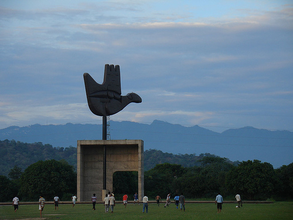

Chandigarh Tourism
History of Chandigarh
Chandigarh
August 15, 1947, the day of independence of India was also the day of division of a nation into India and Pakistan, this was also the day of division of State of Punjab (Punj+Aab) named so for being the land of five rivers being divided into two states West Punjab gone in Pakistan with retaining Lahore as its capital and East Punjab in India became a state without a capital. Shimla which used to be the summer capital of India and had the infrastructure was selected as the temporary capital of Punjab.
The Government of Punjab selected brilliant young engineer Mr. P.L. Verma to undertake the tasks of search for a permanent Capital City for the State of Punjab.
At that time the Punjabis were very nostalgic about Lahore. Till the last moment they hoped that Lahore would remain with India. The loss was felt acutely and people were eager for a city similar to Lahore be built. So Verma and his team of engineers savoured the concept of a larger independent town, when most of the bureaucrats and politicians favoured the concept of a small settlement attached to one of the existing towns. Bureaucrats were conscious of the acute shortage of funds and the very small financial outlay for Punjab. Each politician was eager that this capital be built in the area from where he came. All politicians were trying to pull the capital towards their own constituency.
Under such circumstances Mr. Verma had to lobby intensively with the bureaucrats and the politicians. And it was essentially an account of his dedicated and relentless efforts and lobbying that this idea of a large independent town was finally accepted by Government of Punjab.
Selection of Site
After investigating a no. of sites, the team of engineers & bureaucrats headed by Mr. P.L. Verma, selected the existing site of Chandigarh which met almost all the requirements for a new city.
The area was a flat, gently sloping plain of agricultural land dotted with groves of mango trees which marked the sites of 24 villages or hamlets -- one of which was named Chandigarh on account of its temple dedicated to the goddess.
The general ground level of the site ranges from 305 to 366 meters with a 1 per cent grade giving adequate drainage. To the northeast are the foothills of the Himalayas -- the Shivalik Range -- rising abruptly to about 1524 meters and a dramatic natural backdrop. One seasonal stream, the Patiali ki Rao, lies on the western side of the city and another, the Sukhna Choe, on the eastern side. A third, smaller seasonal stream flows through the very center of Chandigarh. The area along this stream bed has been turned into a series of public gardens called the Leisure Valley.
And finally in March, 1948, the Government of Punjab in consultation with the Government of India, approved a 114.59 sq. km tract of land at the foot of the Shivalik Hills in Ropar district as the site of the new capital. An existing village gave its name (Chandi - Goddess of Power + garh - fortress) to the new city.
Pandit Jawahar Lal Nehru, the First prime minister of India was also quite intimately involved with the Chandigarh project.Pandit Nehru immediately took the final decision and on his visit to the project site on April 2, 1952, said," The site chosen is free from the existing encumbrances of old towns and old traditions. Let it be the first expression of our creative genius flowing on our newly earned freedom.-----Let it be a new town symbolic of the freedom of India unfettered by the traditions of the past and expression of the nation's faith in the future.---The new capital of Punjab will be christened as Chandigarh - a name symbolic of the valiant spirit of the Punjabis. Chandigarh is rightly associated with the name of Goddess Chandi -- Shakti, or power."
Visit Chandigarh
Chandigarh is located near the foothills of the Sivalik range of the Himalayas in northwest India. It covers an area of approximately 114 km2.[20] It shares its borders with the states of Haryana and Punjab. The exact cartographic co-ordinates of Chandigarh are 30.74°N 76.79°E.[26] It has an average elevation of 321 metres (1053 ft).
Key Features
- Completed - 1960
- Formation - 1 Nov, 1966
- Union Territory - 114 km2 (44 sq mi)
- Area rank - 33
- Population (2011) - 1,054,686
- Population rank - 29th
- Language Spoken - Hindi, Punjabi
- Time zone - IST (UTC+5:30)